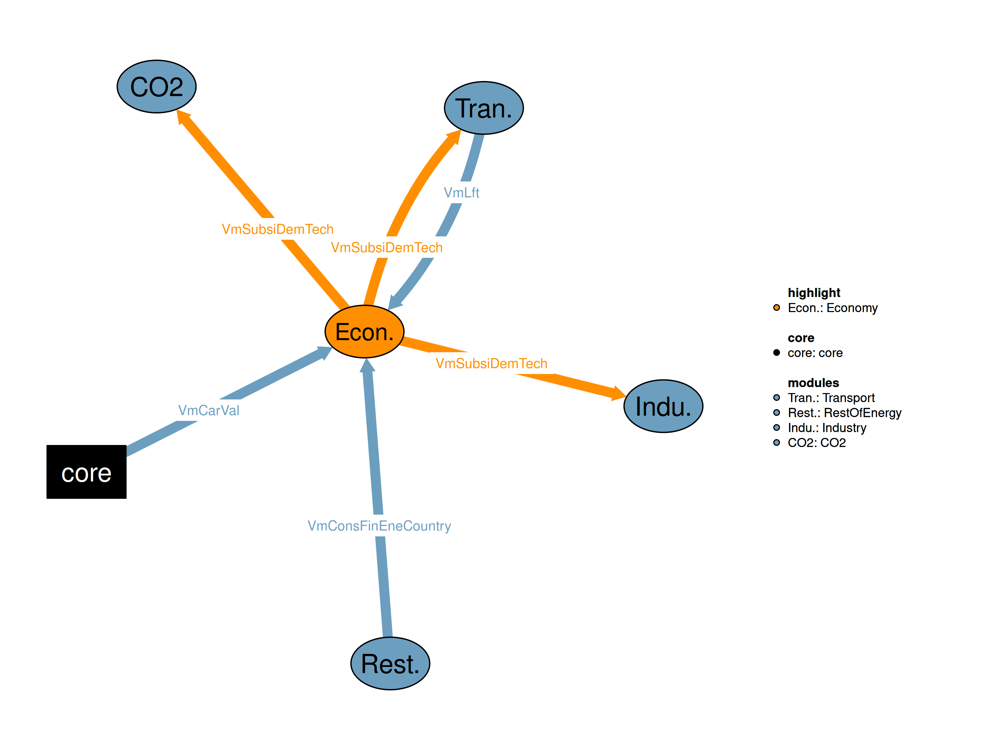

This is the Economy module.

| Description | Unit | A | |
|---|---|---|---|
| VmCarVal (allCy, NAP, YTIME) |
Carbon prices for all countries | \(US\$2015/tn CO2\) | x |
| VmConsFinEneCountry (allCy, EF, YTIME) |
Total final energy consumnption | \(Mtoe\) | x |
| VmLft (allCy, DSBS, TECH, YTIME) |
Lifetime of technologies | \(years\) | x |
| Description | Unit | |
|---|---|---|
| VmSubsiDemTech (allCy, DSBS, TECH, YTIME) |
The state support per unit of new capacity in the demand subsectors and technologies for the following units: |
This is the economy realization of the Economy module.
sets
Equations
Q11SubsiTot(allCy,YTIME) "Computes the total annual state revenues from carbon taxes per region (Millions US$2015)"
Q11SubsiDemTechAvail(allCy,DSBS,TECH,YTIME) "Computes the state grants purposed to the support of each demand technology (Millions US$2015)"
Q11SubsiDemITech(allCy,DSBS,ITECH,YTIME) "Computes the state support per unit of new capacity in the industrial subsectors and technologies (kUS$2015/toe-year)"
Q11SubsiDemTech(allCy,DSBS,TECH,YTIME) "Computes the state grants used for the support of each demand technology (Millions US$2015)"
Q11SubsiSupTech(allCy,STECH,YTIME) "Computes the state grants purposed to the support of each supply technology (Millions US$2015)"
Q11SubsiCapCostTech(allCy,DSBS,TECH,YTIME) ""
!!Q11SubsiCapCostSupply(allCy,SSBS,STECH,YTIME)
Q11NetSubsiTax(allCy,YTIME) "Computes the net difference between the cabon taxes and the green state grants and subsidies (Millions US$2015)"
;
Variables
V11SubsiTot(allCy,YTIME) "Total annual state revenues from carbon taxes per region (Millions US$2015)"
VmSubsiDemTechAvail(allCy,DSBS,TECH,YTIME) "State grants purposed to the support of each demand technology (Millions US$2015)"
VmSubsiDemITech(allCy,DSBS,ITECH,YTIME) "The state support per unit of new capacity in the industrial subsectors and technologies (kUS$2015/toe-year)"
VmSubsiDemTech(allCy,DSBS,TECH,YTIME) "The state support per unit of new capacity in the demand subsectors and technologies for the following units:"
!!Transport (kUS$2015 per vehicle)
!!Industry (kUS$2015/toe-year)
!!CDR ()
!!Residential electricity ()
VmSubsiSupTech(allCy,STECH,YTIME) "State grants purposed to the support of each supply technology (Millions US$2015)"
VmSubsiCapCostTech(allCy,DSBS,TECH,YTIME) ""
VmSubsiCapCostSupply(allCy,SSBS,STECH,YTIME)
VmNetSubsiTax(allCy,YTIME) "The net difference between the cabon taxes and the green state grants and subsidies"
;GENERAL INFORMATION Equation format: “typical useful energy demand equation” The main explanatory variables (drivers) are activity indicators (economic activity) and corresponding energy costs. The type of “demand” is computed based on its past value, the ratio of the current and past activity indicators (with the corresponding elasticity), and the ratio of lagged energy costs (with the corresponding elasticities). This type of equation captures both short term and long term reactions to energy costs. * Economy module The equation computes the total state revenues from carbon taxes, as the product of all fuel consumption in all subsectors of the supply side, along with the relevant fuel emission factor, and the carbon tax posed regionally that year. This is added to the 0.5% of the GDP, which is assumed to be used by each state for green subsidies.
Q11SubsiTot(allCy,YTIME)$(TIME(YTIME)$(runCy(allCy)))..
V11SubsiTot(allCy,YTIME)
=E=
(
(
sum((EF,EFS)$EFtoEFS(EF,EFS),
VmConsFinEneCountry(allCy,EF,YTIME-1) * imCo2EmiFac(allCy,"PG",EF,YTIME-1))
+ sum(SSBS, V07GrossEmissCO2Supply(allCy,SSBS,YTIME-1))
-
sum(SBS,V06CapCO2ElecHydr(allCy,SBS,YTIME-1))
)
+
sqrt(sqr(
sum((EF,EFS)$EFtoEFS(EF,EFS),VmConsFinEneCountry(allCy,EF,YTIME-1) * imCo2EmiFac(allCy,"PG",EF,YTIME-1))
+ sum(SSBS,V07GrossEmissCO2Supply(allCy,SSBS,YTIME-1))
-
sum(SBS,
V06CapCO2ElecHydr(allCy,SBS,YTIME-1))
))
) / 2
*
sum(NAP$NAPtoALLSBS(NAP,"PG"),VmCarVal(allCy,NAP,YTIME-1))
+ 0.005 * i01GDP(YTIME,allCy) * 1000
+ VmNetSubsiTax(allCy,YTIME-1)
;The equation splits the available state grants to the various demand technologies through a policy parameter expressing this proportional division. The resulting amount (in Millions US\(2015) is going to be implemented to the cost calculation of each subsidized demand technology. ``` Q11SubsiDemTechAvail(allCy,DSBS,TECH,YTIME)\)(TIME(YTIME)\((runCy(allCy))\)SECTTECH(DSBS,TECH)).. VmSubsiDemTechAvail(allCy,DSBS,TECH,YTIME) =E= V11SubsiTot(allCy,YTIME) * i11SubsiPerDemTechAvail(allCy,DSBS,TECH,YTIME);
The equation calculates the state support per unit of new capacity in the industrial subsectors and technologies (kUS$2015/toe-year).Q11SubsiDemITech(allCy,DSBS,ITECH,YTIME)\((INDSE(DSBS) and SECTTECH(DSBS,ITECH) and TIME(YTIME) and not CDR(DSBS) and runCy(allCy)).. VmSubsiDemITech(allCy,DSBS,ITECH,YTIME) =E= ( VmSubsiDemTechAvail(allCy,DSBS,ITECH,YTIME) * 1e3 / (V02ShareTechNewEquipUseful(allCy,DSBS,ITECH,YTIME-1) * V02GapUsefulDemSubsec(allCy,DSBS,YTIME-1) * 1e6 * VmLft(allCy,DSBS,ITECH,YTIME) + 1e-6) + (1 - imCapCostTechMin(allCy,DSBS,ITECH,YTIME)) * V02CostTech(allCy,DSBS,ITECH,YTIME-1) - sqrt(sqr( VmSubsiDemTechAvail(allCy,DSBS,ITECH,YTIME) * 1e3 / (V02ShareTechNewEquipUseful(allCy,DSBS,ITECH,YTIME-1) * V02GapUsefulDemSubsec(allCy,DSBS,YTIME-1) * 1e6 * VmLft(allCy,DSBS,ITECH,YTIME) + 1e-6) - (1 - imCapCostTechMin(allCy,DSBS,ITECH,YTIME)) * V02CostTech(allCy,DSBS,ITECH,YTIME-1) )) )\)(ord(YTIME) > 15) / 2;
The equation calculates the state support per unit of new capacity in the demand subsectors and technologies for the following units:
- Transport (kUS$2015 per vehicle)
- Industry (kUS$2015/toe-year)
- CDR ()
- Residential electricity ()Q11SubsiDemTech(allCy,DSBS,TECH,YTIME)\((TIME(YTIME)\)(runCy(allCy))\(SECTTECH(DSBS,TECH)).. VmSubsiDemTech(allCy,DSBS,TECH,YTIME) =E= 0\)ontext sum(TTECH\((sameas(TECH,TTECH)), !! Transport ( !! Transport (EVs) ( VmSubsiDemTechAvail(allCy,DSBS,TECH,YTIME) * 1e3 / (V01NewRegPcTechYearly(allCy,TTECH,YTIME-1) * 1e6) + (1 - imCapCostTechMin(allCy,DSBS,TECH,YTIME)) * imCapCostTech(allCy,DSBS,TECH,YTIME) ) - sqrt(sqr( VmSubsiDemTechAvail(allCy,DSBS,TECH,YTIME) * 1e3 / (V01NewRegPcTechYearly(allCy,TTECH,YTIME-1) * 1e6) - (1 - imCapCostTechMin(allCy,DSBS,TECH,YTIME)) * imCapCostTech(allCy,DSBS,TECH,YTIME))) ) / 2 )\)(ord(YTIME) > 15 and TRANSE(DSBS) and sameas(DSBS,“PC”) and sameas(TECH,“TELC”)) + sum(ITECH\((sameas(TECH,ITECH)), !! Industry VmSubsiDemITech(allCy,DSBS,ITECH,YTIME) )\)INDSE(DSBS) + sum(DACTECH\((sameas(TECH,DACTECH)), !! CDR ( VmSubsiDemTechAvail(allCy,"DAC",DACTECH,YTIME) * 1e6 / (V06CapCDR(allCy,DACTECH,YTIME-1) * V06CapFacNewDAC(allCy,DACTECH,YTIME-1)) + (1 - imCapCostTechMin(allCy,"DAC",DACTECH,YTIME)) * V06LvlCostDAC(allCy,DACTECH,YTIME-1) - sqrt(sqr(VmSubsiDemTechAvail(allCy,"DAC",DACTECH,YTIME) * 1e6 / (V06CapCDR(allCy,DACTECH,YTIME-1) * V06CapFacNewDAC(allCy,DACTECH,YTIME-1)) - (1 - imCapCostTechMin(allCy,"DAC",DACTECH,YTIME)) * V06LvlCostDAC(allCy,DACTECH,YTIME-1))) ) / 2 )\)((ord(YTIME) > 15)) $offtext ;
The equation splits the available state grants to the various supply technologies through a policy parameter expressing this proportional division.
The resulting amount (in Millions US$2015) is going to be implemented to the cost calculation of each subsided supply technology.Q11SubsiSupTech(allCy,STECH,YTIME)\((TIME(YTIME)\)(runCy(allCy))).. VmSubsiSupTech(allCy,STECH,YTIME) =E= V11SubsiTot(allCy,YTIME) !!* i11SubsiPerSupTech(allCy,STECH,YTIME) ;
Subsidies in demand (Millions US$2015)
GIVING DUPLICATES AND NEED TO DEAL WITH SUMQ11SubsiCapCostTech(allCy,DSBS,TECH,YTIME)\((TIME(YTIME)\)(runCy(allCy))\(SECTTECH(DSBS,TECH)).. VmSubsiCapCostTech(allCy,DSBS,TECH,YTIME) =E= sum(TTECH\)(sameas(TECH,TTECH)), !!Transport subsidies and grants VmSubsiDemTechAvail(allCy,DSBS,TECH,YTIME) + imCapCostTechMin(allCy,DSBS,TECH,YTIME) * imCapCostTech(allCy,DSBS,TECH,YTIME) * 1e-3 * (V01NewRegPcTechYearly(allCy,TTECH,YTIME-1) * 1e6) - sqrt(sqr(VmSubsiDemTechAvail(allCy,DSBS,TECH,YTIME) - imCapCostTechMin(allCy,DSBS,TECH,YTIME) * imCapCostTech(allCy,DSBS,TECH,YTIME) * 1e-3 * (V01NewRegPcTechYearly(allCy,TTECH,YTIME-1) * 1e6))) )\((TRANSE(DSBS) and sameas(DSBS,"PC")) / 2 + sum(ITECH\)(sameas(TECH,ITECH)), !!Industry subsidies and grants VmSubsiDemTechAvail(allCy,DSBS,TECH,YTIME) + imCapCostTechMin(allCy,DSBS,ITECH,YTIME) * V02CostTech(allCy,DSBS,ITECH,YTIME) * 1e3 * ((V02EquipCapTechSubsec(allCy,DSBS,ITECH,YTIME) - V02RemEquipCapTechSubsec(allCy,DSBS,ITECH,YTIME)) * VmLft(allCy,DSBS,ITECH,YTIME)) - sqrt(sqr(VmSubsiDemTechAvail(allCy,DSBS,TECH,YTIME) - imCapCostTechMin(allCy,DSBS,ITECH,YTIME) * V02CostTech(allCy,DSBS,ITECH,YTIME) * 1e3 * ((V02EquipCapTechSubsec(allCy,DSBS,ITECH,YTIME) - V02RemEquipCapTechSubsec(allCy,DSBS,ITECH,YTIME)) * VmLft(allCy,DSBS,ITECH,YTIME)))) )\(INDSE(DSBS) / 2 !! + !! sum(DACTECH\)DACTECH(TECH), !!CDR subsidies and grants (V06GrossCapDAC is in annualized \(/tCO2, so multiplied with lifetime) !! VmSubsiDemTechAvail(allCy,"DAC",DACTECH,YTIME) !! + V06LvlCostDAC(allCy,DACTECH,YTIME-1) * 1e-6 * imCapCostTechMin(allCy,"DAC",DACTECH,YTIME) * !! (V06CapFacNewDAC(allCy,DACTECH,YTIME) * V06CapCDR(allCy,DACTECH,YTIME-1)) * VmLft(allCy,"DAC",DACTECH,YTIME) !! - !! sqrt(sqr(VmSubsiDemTechAvail(allCy,"DAC",DACTECH,YTIME) !! - V06LvlCostDAC(allCy,DACTECH,YTIME-1) * 1e-6 * imCapCostTechMin(allCy,"DAC",DACTECH,YTIME) * !! (V06CapFacNewDAC(allCy,DACTECH,YTIME) * V06CapCDR(allCy,DACTECH,YTIME-1)) * VmLft(allCy,"DAC",DACTECH,YTIME))) !! ) / 2 !! + !! imGrantCapCostTech(DSBS,TECH) * 1e-6 * !! (V06CapFacNewDAC(allCy,DACTECH,YTIME) * V06CapCDR(allCy,DACTECH,YTIME-1) + i06SchedNewCapDAC(allCy,DACTECH,YTIME)) * !! VmLft(allCy,"DAC",DACTECH,YTIME) !! )\)sameas (DSBS,“DAC”) !! + !! imSubsiCapCostFuel(“HOU”,“ELC”) * VmConsFuel(allCy,“HOU”,“ELC”,YTIME) !!Residential electricity subsidies ; $ontext
Subsidies in supply (Millions US$2015)Q11SubsiCapCostSupply(allCy,SSBS,STECH,YTIME)\((TIME(YTIME)\)(runCy(allCy))).. VmSubsiCapCostSupply(allCy,SSBS,STECH,YTIME) =E= sum(PGALL\(sameas(PGALL,STECH), i04GrossCapCosSubRen(allCy,PGALL,YTIME) * imFacSubsiCapCostSupply(SSBS,STECH) * V04NewCapElec(allCy,PGALL,YTIME) * 1e3 / i04AvailRate(allCy,PGALL,YTIME) + imGrantCapCostSupply(SSBS,STECH) * V04NewCapElec(allCy,PGALL,YTIME) * 1e3 / i04AvailRate(allCy,PGALL,YTIME) )\)sameas(SSBS,“PG”) + sum(H2TECH\(sameas(H2TECH,STECH), V05CostProdH2Tech(allCy,H2TECH,YTIME) * VmDemTotH2(allCy,YTIME) * (1 - V05ShareCCSH2Prod(allCy,H2TECH,YTIME)) * (1 - V05ShareNoCCSH2Prod(allCy,H2TECH,YTIME)) * imFacSubsiCapCostSupply(SSBS,STECH) + VmDemTotH2(allCy,YTIME) * (1 - V05ShareCCSH2Prod(allCy,H2TECH,YTIME)) * (1 - V05ShareNoCCSH2Prod(allCy,H2TECH,YTIME)) * imGrantCapCostSupply(SSBS,STECH) )\)sameas(SSBS,“H2P”) ; \(offtext ``` This equation calculated the difference between the state revenues by collected carbon taxes, and the green grants and subsidies given in both the supply and demand sectors. ``` Q11NetSubsiTax(allCy,YTIME)\)(TIME(YTIME)\((runCy(allCy))).. VmNetSubsiTax(allCy,YTIME) =E= V11SubsiTot(allCy,YTIME) - sum((DSBS,TECH)\)SECTTECH(DSBS,TECH), VmSubsiCapCostTech(allCy,DSBS,TECH,YTIME) ) !! - !! sum((SSBS,STECH)$SSECTTECH(SSBS,STECH), !! VmSubsiCapCostSupply(allCy,SSBS,STECH,YTIME) !! ) ;
Parameterstable i11SubsiPerDemTechAvail(allCy,DSBS,TECH,YTIME) “State demand technology support policy, expressed as a proportion factor of the available state grants (1)” \(ondelim\)include”./iSubsiPerDemTech.csv” \(offdelim ;\)\(ontext table i11SubsiPerSupTech(allCy,STECH,YTIME) "State supply technology support policy, expressed as a proportion factor of the available state grants (1)"\)ondelim \(include"./iSubsiPerSupTech.csv"\)offdelim ; $$offtext
*VARIABLE INITIALISATION*V11SubsiTot.LO(runCy,YTIME) = 0.0001; VmSubsiDemITech.LO(runCy,DSBS,ITECH,YTIME) = 0; VmSubsiDemITech.L(runCy,DSBS,ITECH,YTIME)\((SECTTECH(DSBS,ITECH)) = 0; VmSubsiDemITech.FX(runCy,DSBS,ITECH,YTIME)\)(DATAY(YTIME) or TFIRST(YTIME) or not SECTTECH(DSBS,ITECH)) = 0; VmSubsiCapCostTech.FX(runCy,DSBS,TECH,YTIME)\((not SECTTECH(DSBS,TECH)) = 0; VmNetSubsiTax.FX(runCy,YTIME)\)(DATAY(YTIME)) = 0; VmSubsiDemTech.LO(runCy,DSBS,TECH,YTIME) = 0; ```
Limitations There are no known limitations.
| Description | Unit | A | |
|---|---|---|---|
| i11SubsiPerDemTechAvail (allCy, DSBS, TECH, YTIME) |
State demand technology support policy, expressed as a proportion factor of the available state grants | \(1\) | x |
| i11SubsiPerSupTech (allCy, STECH, YTIME) |
State supply technology support policy, expressed as a proportion factor of the available state grants | \(1\) | x |
| Q11NetSubsiTax (allCy, YTIME) |
Computes the net difference between the cabon taxes and the green state grants and subsidies | \(10^6s US\$2015\) | x |
| Q11SubsiCapCostTech (allCy, DSBS, TECH, YTIME) |
x | ||
| Q11SubsiDemITech (allCy, DSBS, ITECH, YTIME) |
Computes the state support per unit of new capacity in the industrial subsectors and technologies | \(kUS\$2015/toe-year\) | x |
| Q11SubsiDemTech (allCy, DSBS, TECH, YTIME) |
Computes the state grants used for the support of each demand technology | \(10^6s US\$2015\) | x |
| Q11SubsiDemTechAvail (allCy, DSBS, TECH, YTIME) |
Computes the state grants purposed to the support of each demand technology | \(10^6s US\$2015\) | x |
| Q11SubsiSupTech (allCy, STECH, YTIME) |
Computes the state grants purposed to the support of each supply technology | \(10^6s US\$2015\) | x |
| Q11SubsiTot (allCy, YTIME) |
Computes the total annual state revenues from carbon taxes per region | \(10^6s US\$2015\) | x |
| V11SubsiTot (allCy, YTIME) |
Total annual state revenues from carbon taxes per region | \(10^6s US\$2015\) | x |
| VmNetSubsiTax (allCy, YTIME) |
The net difference between the cabon taxes and the green state grants and subsidies | x | |
| VmSubsiCapCostSupply (allCy, SSBS, STECH, YTIME) |
x | ||
| VmSubsiCapCostTech (allCy, DSBS, TECH, YTIME) |
x | ||
| VmSubsiDemITech (allCy, DSBS, ITECH, YTIME) |
The state support per unit of new capacity in the industrial subsectors and technologies | \(kUS\$2015/toe-year\) | x |
| VmSubsiDemTechAvail (allCy, DSBS, TECH, YTIME) |
State grants purposed to the support of each demand technology | \(10^6s US\$2015\) | x |
| VmSubsiSupTech (allCy, STECH, YTIME) |
State grants purposed to the support of each supply technology | \(10^6s US\$2015\) | x |
| description | |
|---|---|
| allCy | All Countries Used in the Model |
| CDR(DSBS) | CDR subsectors |
| DSBS(SBS) | All Demand Subsectors |
| EF | Energy Forms |
| EFS(EF) | Energy Forms used in Supply Side |
| EFtoEFS(EF, EFS) | Fuel Aggregation for Supply Side |
| INDSE(DSBS) | Industrial SubSectors |
| ITECH(TECH) | Industrial - Domestic - Non-energy & Bunkers Technologies |
| NAP(Policies_set) | National Allocation Plan sector categories |
| NAPtoALLSBS(NAP, ALLSBS) | Energy sectors corresponding to NAP sectors |
| rCon | counter for the number of consumers |
| runCy(allCy) | Countries for which the model is running |
| runCyL(allCy) | Countries for which the model is running (used in countries loop) |
| SBS(ALLSBS) | Model Subsectors |
| SECTTECH(DSBS, TECH) | Link between Model Demand Subsectors and Technologies |
| SSBS(SBS) | All Supply Subsectors |
| STECH | Technologies in supply side |
| TECH | Technologies (in Demand side) |
| TRANSE(DSBS) | All Transport Subsectors |
| TTECH(TECH) | Transport Technologies |
01_Transport, 02_Industry, 03_RestOfEnergy, 06_CO2, core